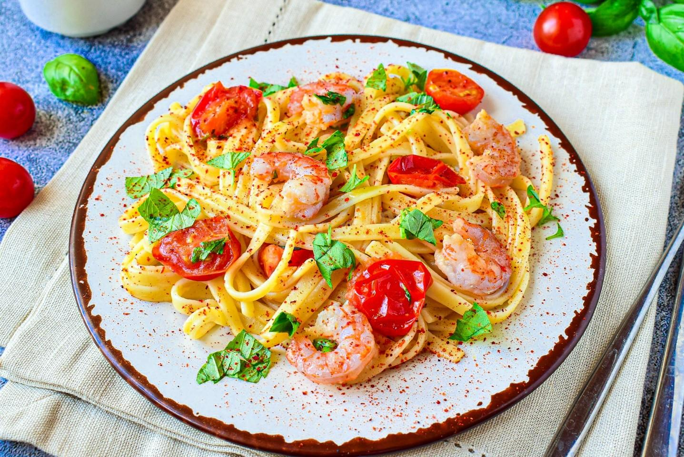
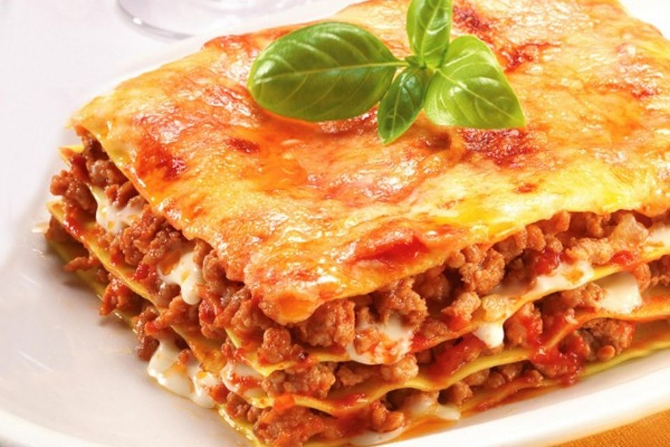

Итальянская кухня
Паста
Карбонара
Болоньезе
Фетучини
Лингвини
Альфредо
Фарфалле
Пицца
Маргарита
Пепперони
Четыре сыра
Гавайская
Прочее
Минестроне
Равиоли
Ризотто
Лазанья
Мои рецепты
Регистрация
Вход
Мои рецепты
Болоньезе
Один из самых популярных рецептов приготовления спагетти с ароматным фаршем в красном вине.

Лингвини
Паста лингвиеи с креветками, помидорами и сыром - изысканное и очень вкусное блюдо, приготовить которое не составит труда.
Маргарита
Думаю, нет человека, который не любил бы пиццу. Предлагаю вам приготовить пиццу "Маргарита", которая, наверное, является самой распространенной.
Четыре сыра
Пицца "Четыре сыра" (итал. pizza ai quattro formaggi) - это так называемая белая пицца, так как в нее не кладут помидоры или томатный соус.

Лазанья
Лазанья - это классическое блюдо итальянской кухни, которое готовится из пармезана, ветчины, моццарелы, рикотты и говядины.